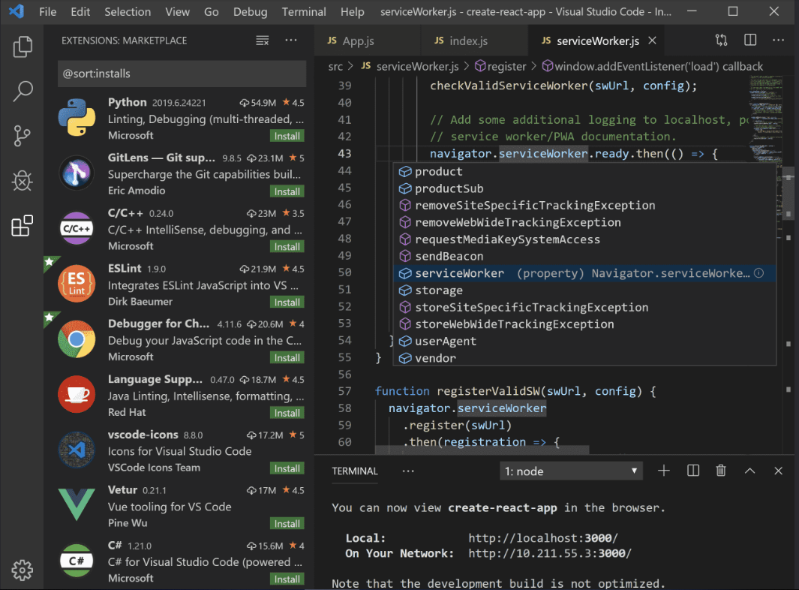

Édition de code.Redéfini.
Gratuit . Construit sur l'open source. Fonctionne partout.
En utilisant VS Code, vous acceptez sa licence et sa déclaration de confidentialité .

Édition de code.Redéfini.
Gratuit . Construit sur l'open source. Fonctionne partout.
En utilisant VS Code, vous acceptez sa licence et sa déclaration de confidentialité .
Déboguer le code directement depuis l'éditeur. Lancez ou attachez à vos applications en cours d'exécution et déboguez avec des points d'arrêt, des piles d'appels et une console interactive.
Rencontrez IntelliSense.
Allez au-delà de la coloration syntaxique et de la saisie semi-automatique avec IntelliSense.
Il fournit des compléments intelligents basés sur des types de variables, des définitions de fonctions et des modules importés.
Commandes Git intégrées..
Travailler avec Git et d'autres fournisseurs SCM n'a jamais été aussi simple.
Passez en revue les différences, mettez en scène les fichiers et effectuez des validations directement depuis l'éditeur.